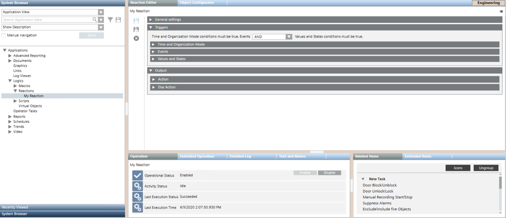
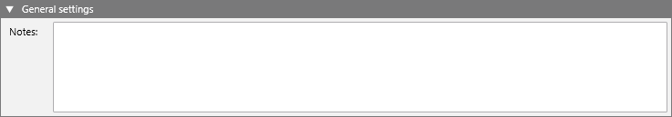

Reactions Workspace
Reactions are located under Applications > Logics > Reactions in the Application View of System Browser. They may be further organized into subfolders under the main Reactions folder.
Reaction Editor
In Engineering mode, when you select an existing reaction in System Browser, or select a folder to start configuring a new one, the Reaction Editor tab displays.

To correctly create and enable a new reaction you must configure at least one Action output instruction and one input trigger (Time and Organization Mode, Events, or Values and States).
General Settings of a Reaction
When you configure a reaction, the General Settings expander lets you enter comments or remarks for a reaction.

Input Triggers of a Reaction
As the input of the reaction, you can configure different types of triggers defining when, in what circumstances, and for what combination of field conditions (events, or changes in value/state) a reaction will execute its output instructions.
When you configure a reaction, the Triggers expander lets you set the following:
- Time and Organization Mode: defines a set of time-dependent preconditions for the reaction (for example, only if it is a weekend, and the building is unoccupied). For details, see Time and Organization Mode Conditions.
- Events: defines the event or combination of events (for example, an alarm in a critical area) that will trigger the reaction. For details, see Events Conditions.
- Values and States: defines the combination of field conditions (for example, AnalogOutput in
Out of Servicestate) that will trigger the reaction. For details, see Values and States Conditions.
You can also configure the Boolean logic between the triggers:
- Select AND to obtain: Time&Organization Mode AND Events AND Values & States: all three triggers must be asserted (true) for the reaction to start.
- Select OR to obtain: Time&Organization Mode AND (Events OR Values&States): the Time&Organization Mode trigger, and at least one of the other two triggers, must be asserted (true) for the reaction to start.

Technical Notes
- If you try to save a reaction for which you did not configure any triggers, a warning message informs you that the reaction can be saved, but will not be enabled.
- Click Yes if you want to save the reaction anyway (its Operational Status will be
Disabled for invalid configuration). - Click No to go back and configure at least one trigger, so that the reaction can be saved and enabled for execution.
- The reaction configuration is retroactive for unacknowledged alarms (that is, for events whose status is
Unprocessed). If you configure a reaction to be triggered by a point that is already in alarm—and you have not yet acknowledged the event—that reaction will be triggered as if the event had newly occurred. However the reaction will not be triggered retroactively by events that have already been acknowledged. If you define a reaction to be triggered for a point that is already in alarm—but you have already acknowledged that event—the reaction will not occur; it will only be triggered if a new event of that type occurs in the system (only after you configure the reaction). If a reaction only has Values and States triggers, its configuration will always be retroactive.
Output Instructions of a Reaction
When you configure a reaction, the Output expander lets you define a set of instructions that specify the sequence of commands you want to execute when:
- The reaction is triggered, that is, when the specified combination of triggers evaluates to true (Action expander)
- The reaction is not triggered, that is, when the specified combination of triggers evaluates to false (Else Action expander).
Configuring the Else Action is optional.

Inside the Action or Else Action expander, you specify the output instructions you want to execute. Each instruction occupies one row and defines a command that will be issued when that instruction is executed.
You configure these instructions in the same way as you do for macros. For details, see Macros Workspace.
With each instruction you can:
- Directly configure the command that you want to execute (on a specified property of the selected scope/target objects).
- Invoke an existing macro already configured in the system, by linking a macro from the Macros folder into the instruction row.
(Optional) If required, you can also choose to convert the Else or Else Action instructions into a separate macro:
- In the Output expander, depending on which output instructions you want to convert, open the Action or Else Action expander.
- Click Save As.
- When a message asks if you want to replace the output instructions with a new macro, click one of the following:
- Yes. The current output instructions will be saved as a new macro in the Macros folder. And the current output will be changed so that it contains just one instruction, invoking this newly created macro.
- No. The current output instructions will be saved as a new macro in the Macros folder. However, the current reaction output will not be changed (the list of instructions will not be replaced by a call to the newly created macro).
Technical Notes
- Since the system propagates property states up and commands down, you can also select a point that includes other points, such as a geographical area or zone, as the target of a trigger condition or macro instruction.
- If the Command field of an instruction is empty (you did not select any command), the instruction will be invalid and you will not be able to save.
- An error message displays if you try to save a reaction that does not have at least one output instruction configured in the Action expander.
Reaction Editor Toolbar Controls
| Selection in System Browser [Engineering mode] | |
Reaction object | Reaction folder or subfolder | |
Delete | Delete the currently selected reaction. | Delete the currently selected reactions folder and any reactions contained inside it. (You cannot delete the main Reactions folder.) |
Save | Save the changes made to the current reaction. | n.a. |
Save As | Save the currently selected reaction with a different name. You can use this to create a new reaction from an existing one. | Create a new reaction object. You must define at least one input trigger and one output instruction before you can save. |
New | n.a. | Create a new subfolder under the currently selected one. |


If you try to save a reaction whose configuration is invalid, a message box informs you of what errors you need to correct, and where they are located.